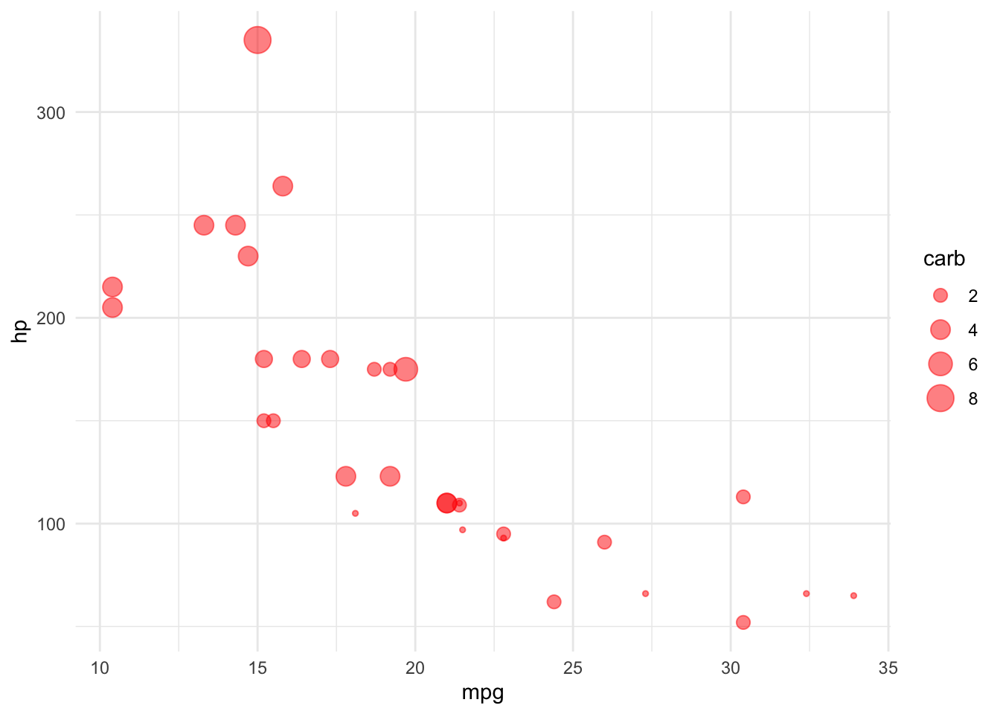
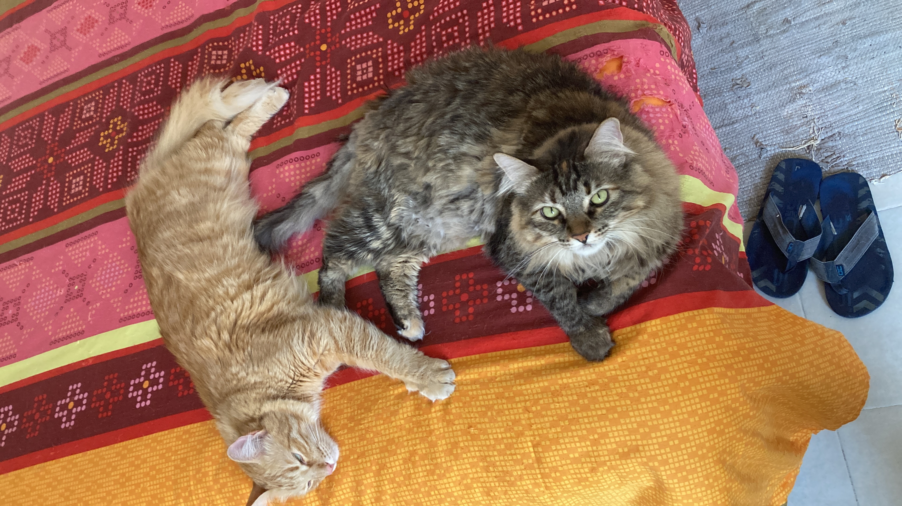
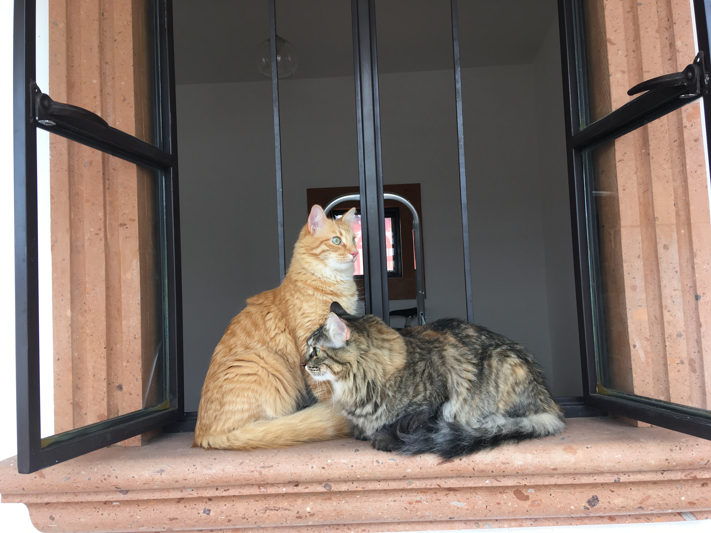

Cómo escribir un documento en Quarto
Paso a paso
Estructura de un documento en Quarto
Quarto tiene tres partes:
- Yamal
- Código o `schunk`
- Escrito
Yamal
El título esta escrito en la parte del Yamal. Esta es la base de la estructura que tendrá nuestro escrito. Quarto enables you to weave together content and executable code into a finished document. To learn more about Quarto see https://quarto.org.
Código
El código se escriben tres acentos graves (```) y después el tipo de programa que se desea utilizar:
- para R es: ```{r}
- para R es: ```{python}
- para R es: ```{julia}
- para R es: ```{ojs}
Ejemplo para una tabla
Como pueden ver en la tabla se pueden acomodar de forma distinta
?(caption)
|
cyl |
mpg |
disp |
hp |
drat |
wt |
qsec |
vs |
am |
gear |
carb |
|
4 |
26.66364 |
105.1364 |
82.63636 |
4.070909 |
2.285727 |
19.13727 |
0.9090909 |
0.7272727 |
4.090909 |
1.545455 |
|
6 |
19.74286 |
183.3143 |
122.28571 |
3.585714 |
3.117143 |
17.97714 |
0.5714286 |
0.4285714 |
3.857143 |
3.428571 |
|
8 |
15.10000 |
353.1000 |
209.21429 |
3.229286 |
3.999214 |
16.77214 |
0.0000000 |
0.1428571 |
3.285714 |
3.500000 |
El promedio de los datos de hp es 146.7
Ahora hacer una figura
Ahora haremos una figura con los mismos datos como Figure 1
Aquí incertar una imagen
Para incertar una imágen sólo tenemos que buscarla en nuestra computadora y pegarla:

y con esta intrucción la figura gato quedaría aquíi: Figure 2

y la siguiente figura es: Figure 3
Y ahora un dolor de cabeza de todos los días las citas bibliográficas:
Sólo hay que hacer un documento tipo “bib”. Paso a paso: - Hacer un documento bib. - Adicionar la cita en el formta BiBTex
Aquí un ejemplo con Change (2007). también se puede citar entre paréntesis (Change 2007)
Sobre agrobiodiversidad (Kahane et al. 2013)
y un paper que yo tengo muchas citas (Conde et al. 2005)
y ahora cambiar el estilo de las citas: ir al siguiente de Zotero
Cambiar a documento pdf y word
References
Change, Intergovernmental Panel On Climate. 2007. “Climate Change 2007: The Physical Science Basis.”
Conde, E, M Cardenas, A Ponce-Mendoza, ML Luna-Guido, C Cruz-Mondragón, and L Dendooven. 2005. “The Impacts of Inorganic Nitrogen Application on Mineralization of 14c-Labelled Maize and Glucose, and on Priming Effect in Saline Alkaline Soil.” Soil Biology and Biochemistry 37 (4): 681–91.
Kahane, Rémi, Toby Hodgkin, Hannah Jaenicke, Coosje Hoogendoorn, Michael Hermann, JDH Keatinge, Jacqueline d’Arros Hughes, Stefano Padulosi, and Norman Looney. 2013. “Agrobiodiversity for Food Security, Health and Income.” Agronomy for Sustainable Development 33: 671–93.